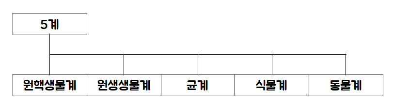

생물의 분류
분류의 단계
계 > 문 > 강 > 목 > 과 > 속 > 종
생물의 계

원핵생물계
원시적인 핵을 가져 핵이 뚜렷하게 관찰되지 않는 생물
원생생물계
핵은 있지만 따로 조직, 기관이 없는 단세포생물
균계
몸이 균사로 이루어져 있고, 핵이 있으며, 광합성을 하지 못해 기생 생활을 하는 다세포생물
식물계
광합성을 하여 스스로 양분을 만드는 생물
동물계
영양분을 스스로 만들지 못해 다른 계를 섭취하며 영양분을 얻는 생물